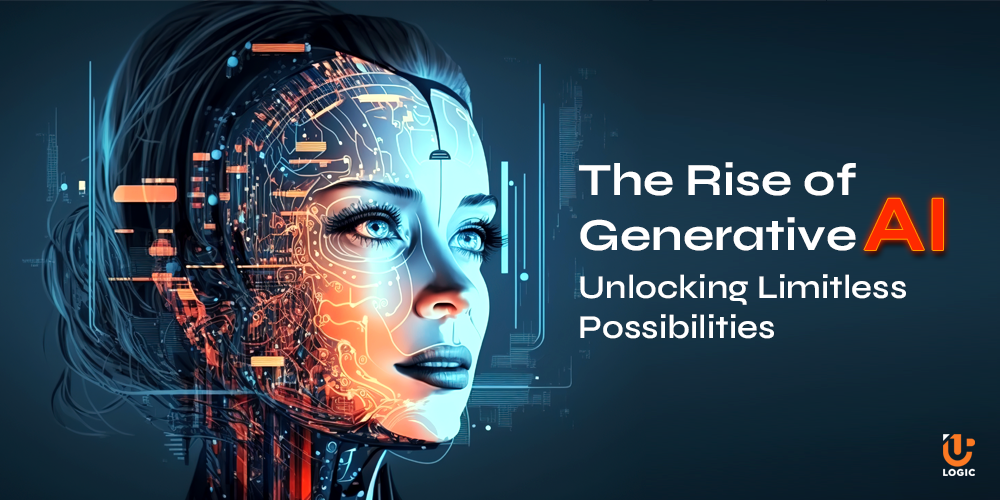

Generative AI
Generative Artificial Intelligence (Generative AI) refers to a class of AI systems designed to generate new content, data, or solutions by learning patterns from existing information. Unlike traditional AI models that primarily focus on analyzing or classifying data, Generative AI creates novel outputs that can mimic or extend the original data it was trained on. This technology has gained significant attention and application across various industries due to its versatility and innovative potential.
- Core Technologies Behind Generative AI
- Neural Networks: At the heart of Generative AI are deep learning models, particularly neural networks that can learn complex patterns and representations from large datasets.
- Generative Adversarial Networks (GANs): Introduced by Ian Goodfellow in 2014, GANs consist of two neural networks—the generator and the discriminator—that work in tandem. The generator creates data, while the discriminator evaluates its authenticity, leading to progressively more realistic outputs.
- Variational Autoencoders (VAEs): VAEs are another type of generative model that learns to encode data into a latent space and then decode it back, allowing for the generation of new data points by sampling from this space.
- Transformer-Based Models: Models like OpenAI's GPT series use transformer architectures to generate coherent and contextually relevant text, enabling applications in natural language processing.
Applications of Generative AI

- Content Creation:
- Text Generation: Tools like ChatGPT and GPT-4 can write articles, stories, and even code.
- Image and Art Generation: Platforms such as DALL-E and Midjourney create realistic images or artistic renditions based on textual descriptions.
- Music Composition: AI models can compose original music pieces in various genres.
- Design and Prototyping:
- Product Design: Generative AI assists in creating innovative product designs by exploring a vast space of possibilities.
- Architecture: AI can generate building layouts and architectural elements optimized for functionality and aesthetics.
- Healthcare:
- Drug Discovery: AI models predict molecular structures and interactions, accelerating the development of new medications.
- Medical Imaging: Generative models enhance medical images, aiding in more accurate diagnoses.
- Entertainment and Media:
- Video Game Development: AI generates realistic environments, characters, and narratives.
- Film and Animation: Automated generation of special effects and animation sequences.
- Business and Marketing:
- Personalized Marketing Content: Creating tailored advertisements and promotional materials based on consumer data.
- Data Augmentation: Enhancing datasets for better training of other AI models.
Developments and Trends
- Generative AI is experiencing significant developments and trends that are transforming its capabilities and applications. Here are some key aspects:
- Advancements in Model Architectures: Models like GPT-4 and DALL-E 2 have improved contextual understanding and generation quality, allowing for more coherent and creative outputs.
- Open-Source Innovations: Open-source projects, such as Stable Diffusion and EleutherAI, have democratized access to powerful generative models, enabling a wider range of users to experiment and innovate.
- Fine-Tuning and Customization: Techniques for fine-tuning generative models on specific datasets have made it possible to tailor outputs to particular domains, enhancing relevance and accuracy.
- Trends
- Multimodal Capabilities: The integration of text, image, and audio generation in single models is on the rise, enabling more holistic content creation and richer user experiences.
- Ethical AI Practices: There’s an increasing emphasis on responsible AI development, including transparency in model training, addressing biases, and ensuring ethical usage guidelines.
- Industry-Specific Applications: Industries like healthcare, entertainment, and education are adopting generative AI for tailored solutions, such as personalized treatment plans, interactive learning tools, and creative content generation.
- Augmented Creativity: Tools that enhance human creativity—like AI-assisted design software, writing aids, and music generation—are becoming more prevalent, fostering collaboration between humans and AI.